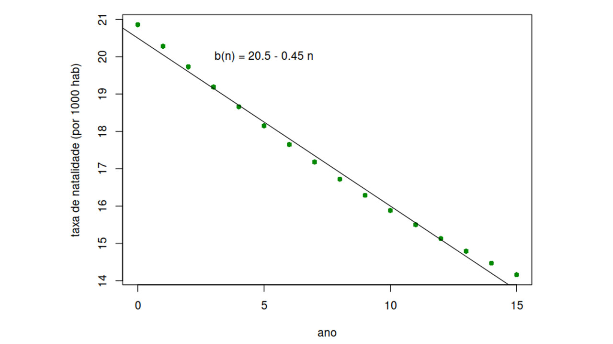

Módulo 2 | Aula 4
Modelo de dinâmica populacional
Introdução
A dinâmica populacional ou de populações trata das variações, no tempo e no espaço, das densidades e tamanhos de uma população. Seu estudo visa a melhor compreensão da variação do número de indivíduos de uma determinada população e também dos fatores que a influenciam em tais variações. Para isso, é necessário o conhecimento das taxas por meio das quais se verificam perdas e ganhos de indivíduos e a identificação dos processos que regulam a variação da população. O interesse por esse estudo não é apenas teórico, sendo importante para o controle de pragas, criação de animais etc. (Rachide, 2006).
O modelo de dinâmica populacional deixa explícitos os quatro processos que podem afetar o tamanho de uma população: nascimento, morte, imigração e emigração. A taxa de variação “a”, que vimos anteriormente, pode ser interpretada aqui como o saldo dessas entradas e saídas, de forma que, se por positiva, a população cresce, se negativa, a população decai.
![Infográfico didático em tons de roxo sobre cálculo de variação populacional. No topo, uma equação horizontal: População (ano + 1) é igual a População (ano), mais nascidos, mais imigrantes, menos mortos, menos emigrantes. Abaixo, duas caixas de texto com cantos arredondados: uma roxo-escura à esquerda, com uma pequena ponta de 'balão de fala' voltada para cima, contendo o texto 'delta P = variação absoluta da população'; outra rosa-púrpura à direita, também com uma ponta voltada para cima, com o texto 'Os quatro fatores ou forças que afetam o tamanho de uma população'. Sob a caixa roxa, o texto: 'Se delta P for menor que zero, a população está caindo. Se delta P for maior que zero, a população está aumentando.' Sob a caixa rosa, a equação: 'Taxa de crescimento (a) é igual a delta P sobre P(ano). A parte inferior da imagem é decorada com uma padrão geométrico abstrato de quadrados e retângulos roxos.](../../media/modulo2/aula4-img1.jpg "Fonte: Campus Virtual Fiocruz, a partir do autor (2026).")
O IBGE monitora as taxas de natalidade e mortalidade da população a partir da contagem de nascidos e de óbitos anuais. A tabela a seguir mostra os valores calculados para o período de 2000 a 2015, quando a taxa de crescimento baixava de 1,6 (em 2000) para menos de 1,2 (em 2015).
Observe a tabela a seguir. Vamos analisar o que pode explicar essa redução do crescimento populacional.
| Taxa bruta de natalidade e mortalidade por 1000 habitantes, período 2000 – 2015 | ||
|---|---|---|
| Ano | Taxa de natalidade | Taxa de mortalidade |
| 2000 | 20,86 | 6,67 |
| 2001 | 20,28 | 6,56 |
| 2002 | 19,73 | 6,44 |
| 2003 | 19,19 | 6,35 |
| 2004 | 18,66 | 6,27 |
| 2005 | 18,15 | 6,2 |
| 2006 | 17,65 | 6,14 |
| 2007 | 17,18 | 6,1 |
| 2008 | 16,72 | 6,07 |
| 2009 | 16,29 | 6,05 |
| 2010 | 15,88 | 6,03 |
| 2011 | 15,5 | 6,02 |
| 2012 | 15,13 | 6,03 |
| 2013 | 14,79 | 6,04 |
| 2014 | 14,47 | 6,06 |
| 2015 | 14,16 | 6,08 |
Observe que a natalidade caiu 6 pontos percentuais enquanto a mortalidade permaneceu quase a mesma no período. Vamos supor que a migração não tenha sido muito importante nesse período, de modo que podemos fazer um modelo assim:
P(n+1) = (b - m) Pn, em que b é a natalidade e m é a mortalidade. Vamos supor que a mortalidade é constante, o que é consistente com os dados:
m = 6,1 por 1000 = 0,0061 ao ano
A taxa de natalidade, por sua vez, está caindo no Brasil quase que linearmente. Usando uma regressão linear simples, é possível representar essa queda por meio de uma equação com a seguinte forma:
b(n) = 20,5 – 0,45 n, em que n é a contagem de anos a partir de 2000. Isso é, 2000 é o ano 0.
Em 2000:
b(0) = 20,5 nascidos por 1000 hab = 0,00205 nascimentos, per capita, ao ano.
Em 2010:
b(10) = 20,5 – 0,45 * 10 = 16 nascidos por 1000 habitantes por ano = 0,0016 nascimentos per capita.
Compare essas estimativas com a tabela e veja que a equação proposta é uma boa representação dos dados, mas não é perfeita. Essa atividade de representar dados por equações é modelagem.

Nossa modelagem ainda não terminou! Agora, com uma expressão matemática para a natalidade e a mortalidade, podemos voltar ao modelo base:
P(n+1) = P(n) + ( 20,5 – 0,45 n)/1000 * P(n) - 6,1/1000 * P(n)
Colocando os termos em comum juntos, temos:
P(n+1) = (1 + ( 14,4 – 0,45 n)/1000) * P(n)
Faça você mesmo!
Esse é o modelo proposto! Agora é testar comparando com os dados. O script em R que faz esse cálculo está aqui. O gráfico gerado, visto a seguir, mostra que o modelo superestima um pouco a população, isto é, a população medida ainda é um pouco menor do que o previsto pelo modelo, mas, de forma geral, o erro não é muito grande.
![Gráfico de dispersão e linha que compara um modelo matemático com dois pontos de dados. A imagem mostra um gráfico de duas dimensões em um fundo branco, cercado por uma borda preta. No interior da borda, no canto superior esquerdo, há uma legenda com bordas pretas que exibe duas linhas de texto. A linha superior diz: “ - modelo” e começa com um traço curto, fino e verde. A linha inferior diz: “o dados” e começa com um pequeno círculo preto, fino e não preenchido. No centro, o gráfico exibe uma linha diagonal, fina e verde, que se estende do canto inferior esquerdo para o canto superior direito. Ao longo da linha, há dois círculos pequenos, finos e não preenchidos que não estão na linha, mas estão próximos a ela. O círculo mais à esquerda está na parte inferior da linha, e o círculo mais à direita está no centro da linha e ligeiramente abaixo dela. Abaixo da borda, em direção ao centro, está o rótulo do eixo x: “anos desde 2000 (n)”. Abaixo da borda, do lado esquerdo, em direção ao rótulo do eixo x, estão as marcas do eixo x: “0”, “5”, “10”, “15”. Do lado esquerdo da borda, girado 90 graus no sentido anti-horário e centrado, está o rótulo do eixo y: “pessoas (milhões)”. Do lado esquerdo da borda, em direção ao rótulo do eixo y, estão as marcas do eixo y: “170”, “175”, “180”, “185”, “190”, “195”, “200”, “205”.](../../media/modulo2/aula4-img3.jpg "Fonte: Elaborado pelo autor (2026).")
Vimos os primeiros passos da construção de um modelo populacional e essas ideias se expandem para vários outros modelos que, por sua vez, vão avaliar outros aspectos da população, como estrutura etária. Para se aprofundar mais sobre o tema, separamos alguns conteúdos complementares: